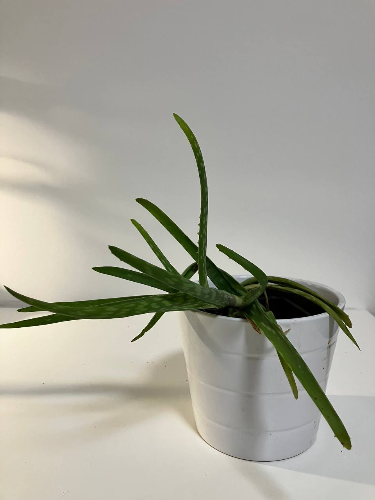
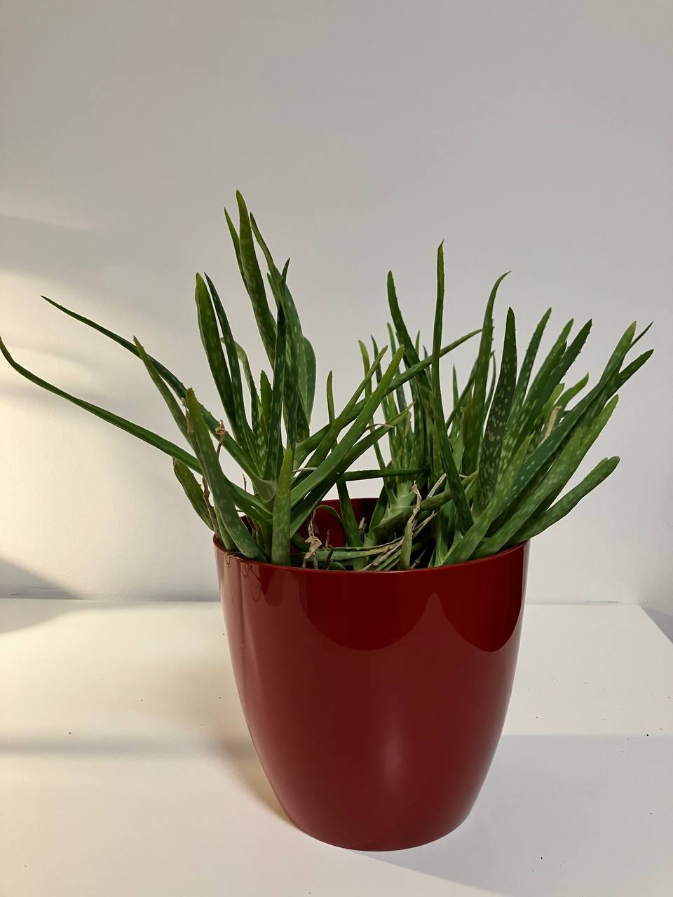

Activity
- Scheduled
- Feeding 01-09-2024
- Repotting 03-08-2026

Activity
- Scheduled
- Feeding 01-09-2024
- Repotting 03-08-2026
Aloe Plant Care Guide
Light
- Bright, Indirect Sunlight: Aloe plants thrive in bright, indirect sunlight. Direct sunlight for long periods can cause the leaves to turn brown.
Watering
- Watering Schedule: Water Aloe plants sparingly. Allow the soil to dry out completely between waterings. Overwatering can lead to root rot.
- Watering Technique: Water deeply but infrequently. Ensure excess water drains away to avoid waterlogged soil.
Soil
- Well-Draining Soil: Use a cactus or succulent potting mix. If using regular potting soil, mix in perlite or sand to improve drainage.
Temperature
- Warm Temperatures: Aloe plants prefer temperatures between 55-80°F (13-27°C). They can tolerate cooler temperatures but should be protected from frost.
Feeding
- Fertilization: Feed Aloe plants sparingly. Use a balanced, water-soluble fertilizer diluted to half strength once a month during the growing season (spring and summer).
Potting
- Container Choice: Choose a pot with drainage holes. Terra cotta pots are ideal as they allow the soil to dry out more completely between waterings.
- Repotting: Repot when the plant becomes root-bound or outgrows its container, usually every 2-3 years.
Pests and Problems
- Common Pests: Watch for common pests such as aphids, mealybugs, and scale. Treat infestations with insecticidal soap or neem oil.
- Leaf Care: Remove any dead or damaged leaves to keep the plant healthy. Clean leaves occasionally to remove dust.
Propagation
- Offsets (Pups): Aloe plants produce offsets or pups that can be separated and potted individually. Allow the offsets to dry for a day or two before planting to prevent rot.